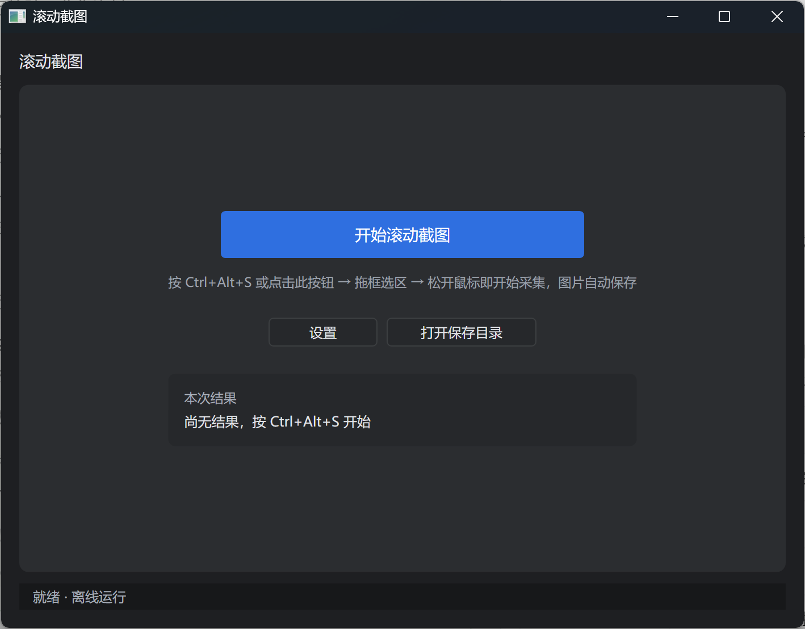
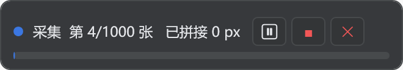
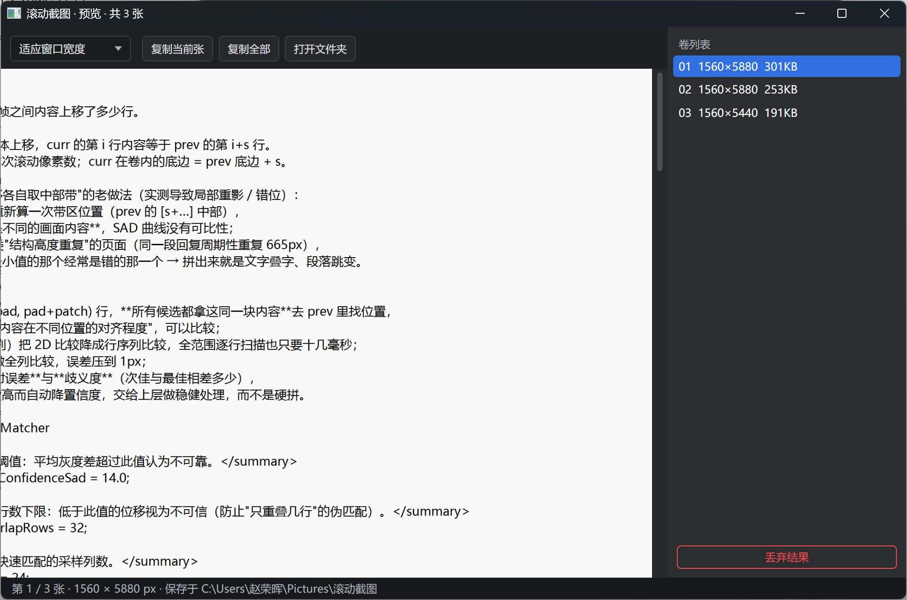
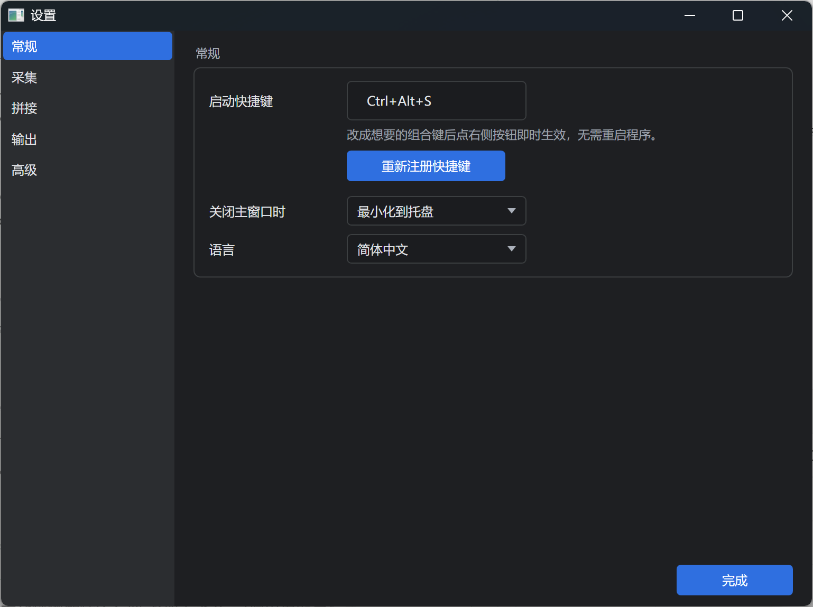

内网代码想给外网 AI 看？这个免费小工具，三步截成一张长图
绿色单文件、不联网、不用装运行时，框选一下自动滚到底，拼成一张不叠字、不断行的长图。工具是在外网用 AI 辅助写的，大概一个下午，代码开源免费。
一、它解决的是哪件麻烦事
起因很具体：内网机器上的代码，我看得见，但文本带不出来——不能复制粘贴到外网，也不能把文件传出去。可我又想让外网的 AI 帮我读它、解释它、改它。
剩下唯一能带出去的形态就是截图。（什么内容可以带出去、什么不行，按公司规定来，这里不展开。）
问题是一屏装不下一个文件。几百行代码要滚七八屏，逐屏截图再一张张发给 AI，它拿到的是一堆碎片，上下文全断。得拼成一张连续的长图才有用。
同一件事还有别的版本：长网页存档、聊天记录留证、PDF 里的长表格、写完的文档发给不看电脑的人。只要内容超过一屏，需求都一样。
二、先说结论：为什么值得装
| 普通截图 | 在线长图工具 | 常见滚动截图软件 | ScrollShot | |
|---|---|---|---|---|
| 超过一屏 | 不行 | 可以 | 可以 | 可以 |
| 要联网 / 上传内容 | 不用 | 要，内容得出本机 | 部分要登录 | 全程离线 |
| 要安装 / 管理员权限 | 不用 | 不用 | 大多要装 | 不用，双击即用 |
| 拼接质量 | — | 看服务 | 常有叠字、白带、重复段 | 像素级对齐，接缝可自检 |
| 价格 | 免费 | 限高 / 会员 | 限高 / 会员 | 免费，MIT |
对我最关键的其实是第二行和第三行：内网机器装不了东西、也连不了外网，一个拷进去就能跑、又不会把内容传到任何服务器的单文件，几乎是唯一能落地的形态。
顺便说清楚：这工具是在外网用 AI 辅助写的，从提需求到能出图大概一个下午。所以这篇不谈实现，只谈它好不好用、怎么用。想看踩坑和原理，仓库里另有一篇技术复盘。

三、怎么拿到
方式一：直接拿编译好的单文件
当前版本 v1.0.0，已经发布，直接下载：
https://github.com/zhaojzjx/scrollshot/releases/latest
找到附件 ScrollShot-v1.0.0-win-x64.zip（约 61 MB），解压出 ScrollShot.exe（约 150 MB，自带 .NET 10 运行时）。拷到 U 盘带进内网机器，双击就能跑，不用安装、不用管理员权限、不用联网。
Releases 页面自动附带的 Source code (zip) 只是源码包，别下错了。
方式二：自己编译（外网机器上，装了 .NET 10 SDK 就行）
git clone https://github.com/zhaojzjx/scrollshot.git
cd scrollshot/src/ScrollShot && dotnet publish -c Release产物在 bin/Release/net10.0-windows/win-x64/publish/ScrollShot.exe。
【可选配图：Releases 页面，圈出 zip 附件 —— 发布时自行截一张即可】
四、三步用起来
第 1 步：启动
双击 exe，主窗口出现，托盘多一个蓝底小相机图标。关掉主窗口不会退出，它会收进托盘常驻，随时可用；右键托盘图标可以打开窗口或彻底退出。想让 X 直接结束进程，在「设置 → 关闭主窗口时」改成「退出」。
第 2 步：按 Ctrl+Alt+S，框选区域
屏幕变暗进入框选状态，用鼠标拖出要截的窗口区域。只框内容区，别把标题栏、任务栏框进去——框多大，长图就多宽。
第 3 步：松开鼠标，开始
不需要再点确认。程序会自己把内容滚回顶部，然后一屏一屏地滚、截、拼。选区外出现一条胶囊控制条，显示当前进度（自动避开选区，不会被截进长图）。到底或按停止后，自动弹出预览窗，图片已经存好。
| 操作 | 快捷键 / 方式 |
|---|---|
| 开始截图 | Ctrl+Alt+S（或主窗口「开始滚动截图」、托盘右键） |
| 取消框选 | Esc 或鼠标右键 |
| 中止采集 | Esc 或胶囊上的「■」 |
| 打开设置 | 主窗口「设置」/ 托盘「设置…」 |
| 打开保存目录 | 主窗口「打开保存目录」/「打开文件夹」 |

五、采集中途能干什么
胶囊会自动停在选区外的空位，采集期间固定不可拖动（避免拖进选区被截进长图）。采集时鼠标始终归你控制：程序不再每帧把光标拉来拉去，可以正常移开、点别的窗口；鼠标一移到胶囊上还会自动让行——暂停滚动，胶囊显示「已让行 · 移开鼠标继续」，可以从容点按钮，移开即恢复采集。上面三个按钮：
- ⏸ 暂停 / 继续：临时要动一下鼠标、切个窗口时用
- ■ 停止并保存：不想滚到底了，已经拼好的部分照样出图
- ✕ 停止并丢弃当前卷：这一卷不要了，直接作废
Esc 随时中止。这几个按钮看着不起眼，但真到截一个几百屏的页面时，能不能中途刹车，体验差别很大。
六、结果在哪，怎么交给 AI
默认存到 图片\滚动截图，文件名像 ScrollShot_20261107_185500_01.png，按时间加卷号排好，不会覆盖历史结果。
- 默认 PNG，设置里可切 JPG（默认质量 90），要发给 AI 时体积能小不少
- 采集完自动把首张复制进剪贴板——这是我最常用的路径：截完直接
Ctrl+V粘进 AI 对话框，一步都不用多走 - 预览窗里可以缩放查看（适应窗口宽度 / 100% / 适应窗口），检查接缝处的文字有没有重影
- 预览窗还有「复制当前张」「复制全部」「打开文件夹」「丢弃结果」四个按钮
主窗口的结果区也留了「预览」「复制首张」「打开文件夹」，采完关了预览窗也能找回来。

【可选配图：把长图粘进 AI 对话框的效果 —— 发布时补一张】
七、内容太长会怎样：自动分卷
单张 PNG 有高度上限，几万像素也扛不住内存。所以超过 6000 像素就自动切一卷，存一张，继续截。
有两个细节是为"给 AI 看"做的：
- 切点尽量落在行间空白处，不会把一行代码拦腰切断，上下两张各剩半个字
- 卷与卷之间保留 100 像素重叠，翻看时上下文是连续的，不会突然断掉
给 AI 时按顺序把几张图一起传、并在提示里说明"这是同一份代码的连续第 1/2/3 段"，它就能当一份完整材料读。
准不准不用信我：仓库里带了 tools/verify_stitch.py，采完跑一下，卷间衔接的平均灰度差应该是 0.000（逐像素一致），不是 0 就说明接断了。依赖安装和命令见仓库 README 的「自检」一节。
八、几个常用设置
设置窗口分「常规 / 采集 / 拼接 / 输出 / 高级」五组，改动即时保存、不用重启程序（只有快捷键要额外点一下「重新注册快捷键」）。多数人默认值就够，只列几个真会用到的：
| 想解决什么 | 改哪里 | 建议 |
|---|---|---|
| 快捷键跟别的软件冲突 | 常规 → 启动快捷键 | 改完点「重新注册快捷键」 |
| 担心滚动太快漏内容 | 采集 → 滚动步长 | 新版已自动限制单帧不超过选区 55%，一般无需调整；特殊应用可调到 0.5–0.6 |
| 某应用滚轮没反应 | 采集 → 滚动方式 | 换成 PageDown |
| 滚动后画面还没画完 | 采集 → 滚动后等待 | 默认 300ms，调到 500 |
| 需要摆好窗口再开始 | 采集 → 开始前倒计时 | 默认关闭 |
| 想控制单张大小 | 拼接 → 单张最大高度 | 默认 6000px |
| 想换保存位置 / 格式 | 输出 → 保存位置 / 默认格式 | 也可直接改 config.json |
| 不想自动占剪贴板 | 输出 → 自动复制 | 关掉即可 |

配置文件在 %AppData%\ScrollShot\config.json，日志也在同目录，出问题可以直接翻。
九、哪些情况不适用
推荐也得说清楚边界，免得白折腾：
- 只支持纵向滚动，横向滚动截图没做
- 依赖
Ctrl+Home把内容滚回顶部；不响应该快捷键的应用，可能从中间开始截 - 默认用 BitBlt 截屏，GPU 直绘窗口、部分远程桌面场景可能截到黑屏；设置里的 WGC 选项目前是预留，选了会自动回退
- 混合 DPI 的多显示器（比如一台 100%、一台 200%）：按主屏缩放换算，跨屏框选可能有偏差
- 不支持需要提权的窗口（UAC 安全桌面）
十、为什么敢推荐
不是因为它功能多，恰恰是因为它只做一件事，而且能验证：
- 离线、零依赖、零上传。整个过程不联网，截图不经过任何服务器——要给 AI 看的内容，先得保证没在别处留过副本。
- 拼接质量可自检。叠字、白带、重复段落这类错，肉眼要滚到很下面才发现；工具给了逐像素验证的办法。
- 代码全公开，MIT。想改、想审、想自己编译都行，不存在"免费版藏了什么"的问题。
- 一个下午用 AI 写出来的小东西，没打算做成大产品，也就没有账号、会员、广告这些负担。
如果你也在内网里对着带不出来的代码发愁，或者只是想找个不用登录、不用联网、双击就能用的长图工具，可以试试。
- 下载：https://github.com/zhaojzjx/scrollshot/releases/latest
- 仓库：https://github.com/zhaojzjx/scrollshot
- 技术复盘：仓库内
docs/tech-notes.md - 协议：MIT，免费可商用。
工具与本文均由 AI 辅助完成，从提需求到能出图约一个下午。如果对你有帮助，欢迎转发，或去仓库点个 star。